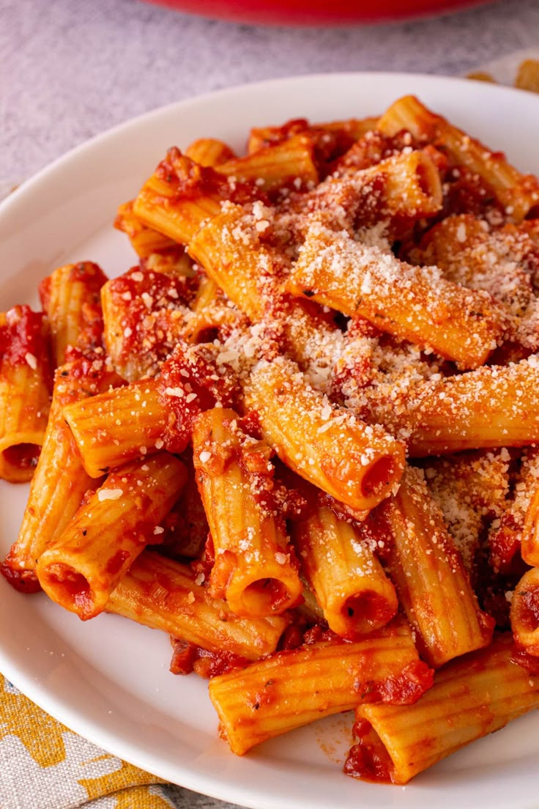

Amatriciana Pasta
This is my favorite pasta dish. It has a rich tomato sauce with pancetta,
onion, and a little chili, and it is easy to make at home.

Ingredients
This recipe makes two to three servings.
- 160 g spaghetti or bucatini
- 2 tablespoons olive oil
- 1/2 onion, thinly sliced
- 40 g pancetta, diced
- 3 medium tomatoes, peeled and chopped
- 20 g grated pecorino cheese
Instructions
The sauce takes about 20 minutes, so boil the pasta while it simmers. For
another version of this dish, see
this recipe website.
- Heat the olive oil in a large pan and cook the onion until soft.
-
Add the pancetta and one dried chili, and cook until the fat turns
clear.
- Pour in about 50 ml of white wine, then simmer for a few minutes.
- Add the tomatoes and simmer for about 15 minutes until thick.
-
Boil the pasta in salted water, drain it, and toss it with the sauce.
-
Stir in half of the cheese, add salt and pepper, and top with the rest.